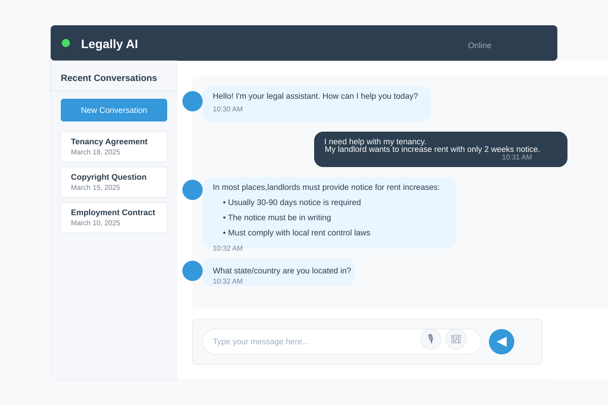

Legally revolutionizes legal practice by integrating advanced AI with comprehensive case management tools to streamline legal workflows, enhance decision-making, and improve access to justice.
Explore FeaturesDiscover how Legally's integrated features deliver a complete legal practice solution
AI-assisted document drafting and review with version control, digital signatures, and automated legal citation checking.
Electronic filing interface for court submissions with jurisdiction-specific forms, deadline tracking, and status monitoring.
Intelligent legal issue analysis, case merit assessment, and jurisdiction recommendations to streamline case preparation.
Comprehensive matter organization with document association, task assignment, and integrated client communications.
Court decision repository with outcome analysis, appeal recommendations, and precedent linking to similar cases.
Advanced analytics for case load management, decision pattern analysis, and performance metrics for judicial efficiency.

Legally is designed to address the key challenges facing the modern legal system. By integrating advanced AI capabilities with user-friendly interfaces, we're creating a platform that enhances efficiency, accuracy, and access to justice.
Our system connects attorneys, judges, and court staff in a secure digital environment that streamlines workflows while maintaining the highest standards of legal practice.
Legally offers tailored solutions for every role in the legal system